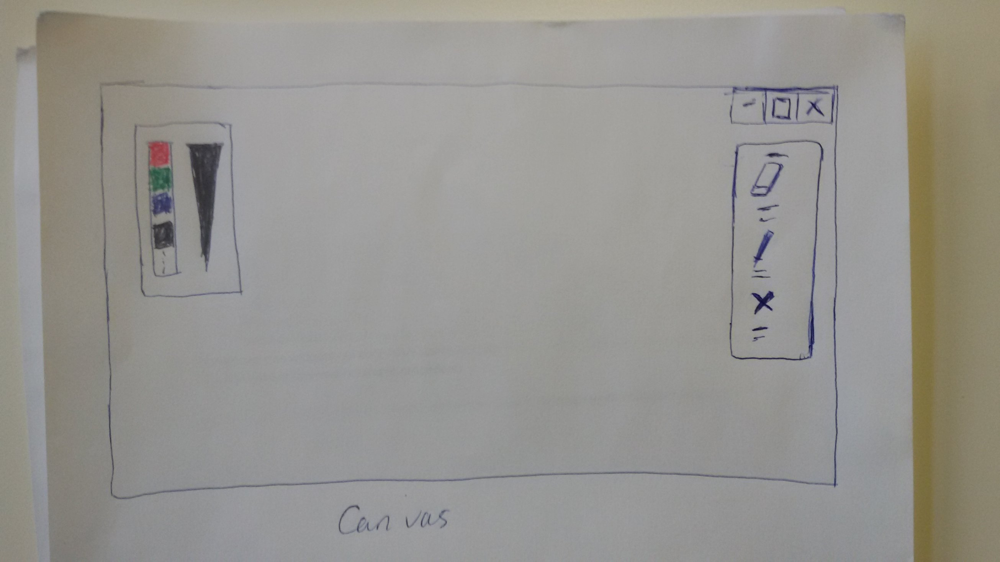
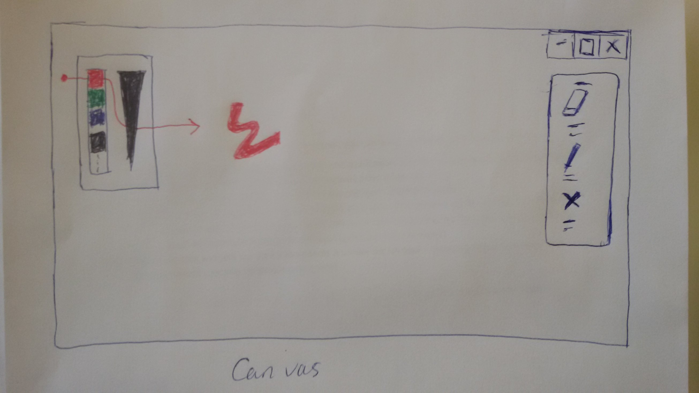
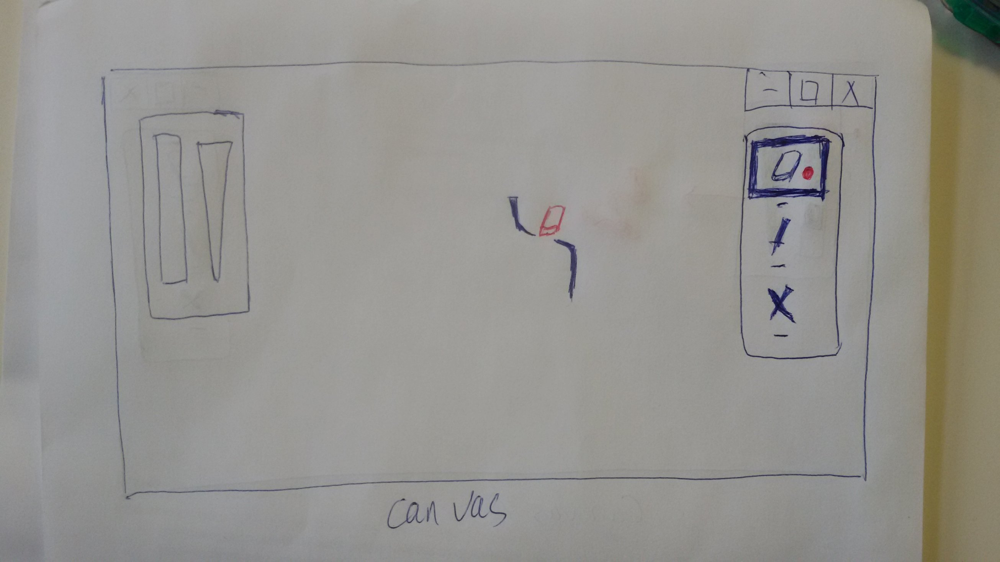
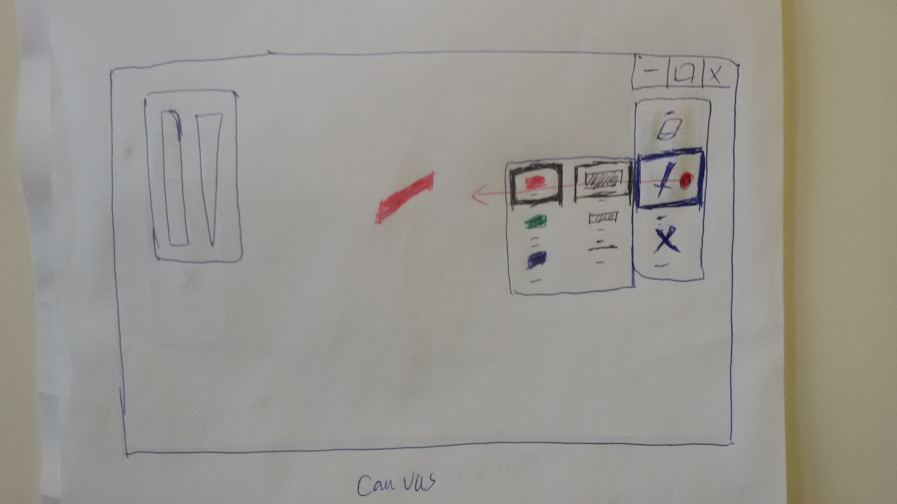
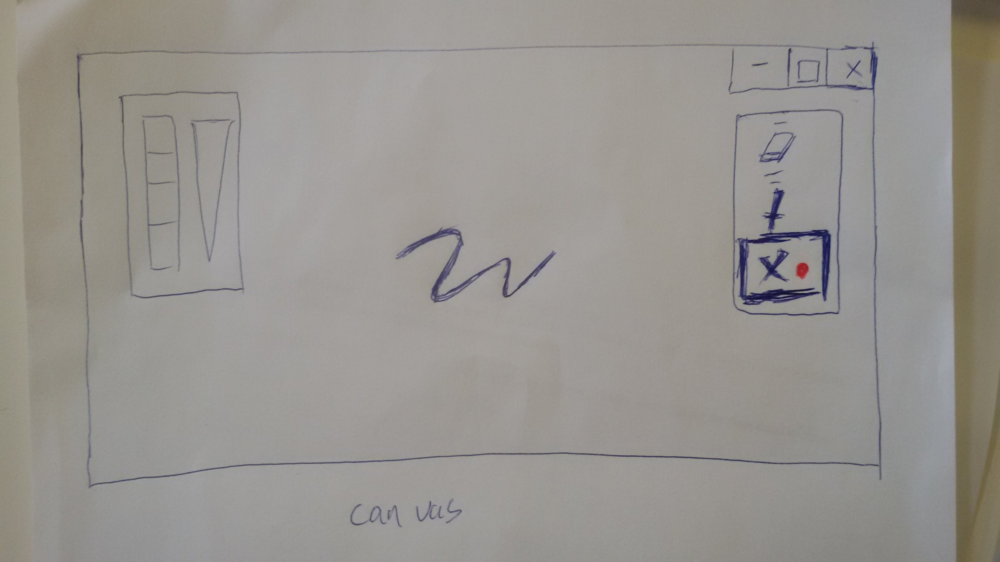

Honglin LI
Peikun ZHOU
Une application de dessin: un canvas
Un widget: changer la taille du tracé. Il y a trois taille ici pour simplifier.
Un widget: changer la couleur du tracé. Il y a quatre couleurs pour choisir.
Un widget: effacer le tracé.
Crossing deux widgets: changer la taille et la couleur du tracé.
Il y deux panneau: à gauche, ce sont deux widgets pour changer la taille et la couleur du tracé
Quand on fait clique gauche, ensuite on glisse de gauche à droite pour chosir la couleur et la taille du tracé
Lorsqu'on clique le bouton de la gomme, on peut effacer les tracés.
Lorsqu'on clique le bouton du pinceau, le menu de la taille et la couleur du tracé affiche. on peut choisir par dragger le curseur. Passer par la bordure gauche et fonde est de valider le choix; Si passer par la bordure haute et droite, c'est d'annuler votre choix.
Quand on clique le bouton de la croix, on peut annuler la dernière opération qu'on vient de faire.